This guide explains, screen by screen, how to manage the XY Academy English Speaking Café website from the administrator dashboard. Every screenshot uses numbered green markers; the list under each picture explains what each marker does.
01 Signing in & your account
02 Dashboard layout
03 The overview page
04 Sessions & schedule
05 Bookings & waitlists
06 Programs & prices
07 Teachers
08 Events & guests
09 Membership plans & members
10 Payments
11 Users, families & companies
12 The library
13 Contact messages
14 Settings
15 What your customers & teachers see
16 Daily routine checklist
17 FAQ & troubleshooting
18 Glossary & support
How the platform works in one minute
XY Academy is a café-style English club. Learners pick a program (Small Group Conversation, 1-to-1 Coaching, Conversation Tables, Business English, Pronunciation Lab, Kids, Teens), then choose a session (a date, time and teacher). Each session has a limited number of seats — maximum 5 learners plus 1 native teacher for groups. When a session is full, new learners join a waitlist automatically.
Learners pay online by card, pay at the café, or use a membership credit. Teachers record attendance and progress. As the administrator, you control everything: schedule, prices, capacities, teachers, events, memberships, payments, users, books and site settings.
You never need to touch code or cPanel for day-to-day work. Everything in this guide is done from your browser at https://xy-academy.net/login.
Chapter 01
01Signing in & your account
Open https://xy-academy.net/login on a computer, tablet or phone. Admins, teachers, parents, companies and learners all use the same sign-in page — the platform opens the right dashboard for each role.
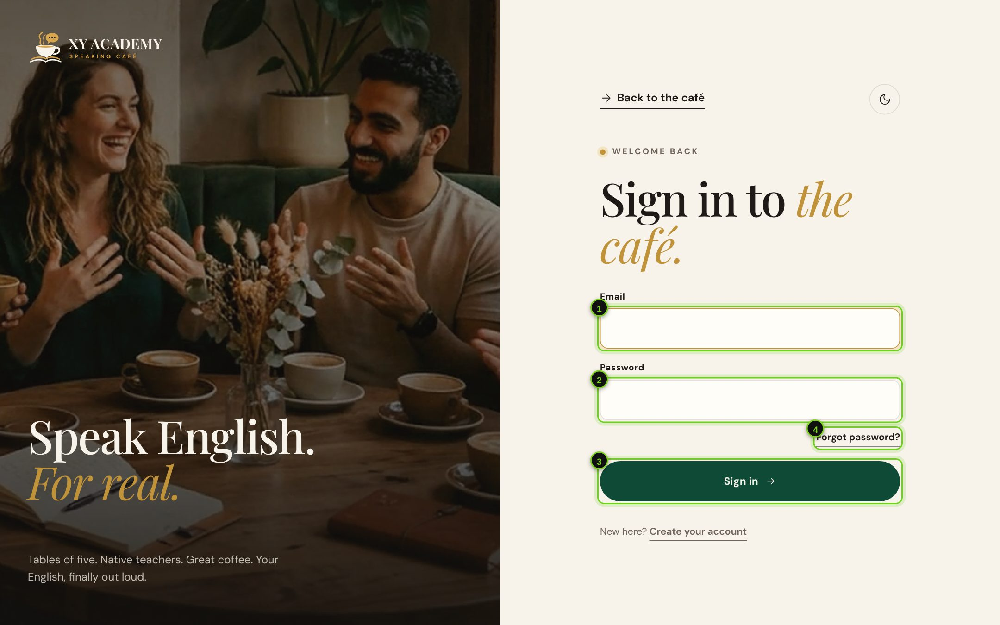
Figure 1 — The sign-in page
1Email — the admin email chosen during installation.
2Password — case sensitive, at least 10 characters for admins.
3Sign in — admins land directly on the admin overview.
4Forgot password? — sends a reset link valid for 1 hour.
Security good practice
After 8 wrong attempts the form is blocked for 5 minutes — wait, then try again.
Change your password from Users → your account → New password.
Create a separate admin account for each staff member instead of sharing one password.
Always click Sign out in the sidebar on a shared computer.
Before going live, delete the demo accounts (student@demo.cafe, parent@demo.cafe, hr@demo.cafe and the demo learners) from Users. Demo teacher accounts can be kept but should get new passwords.
Chapter 02
02Dashboard layout
Every admin screen shares the same structure: a dark sidebar on the left, a top bar, and the working area.
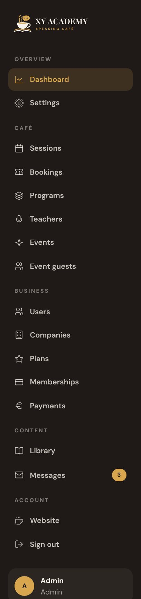
Figure 2 — The admin sidebar
Overview
Dashboard — key figures and shortcuts. Settings — contact details, rules and texts.
Café
Sessions — the schedule (dates, teachers, seats). Bookings — every seat reservation and waitlist. Programs — what you sell, with prices and levels. Teachers — native teacher profiles. Events — quiz nights, debates, karaoke… Event guests — who registered to which event.
Business
Users — all accounts (learners, parents, teachers, companies, admins). Companies — corporate clients. Plans — membership offers. Memberships — who subscribed to which plan. Payments — every transaction.
Content
Library — downloadable books by level. Messages — contact form messages (a number shows unread ones).
Account
Website opens the public site; Sign out ends your session.
Light & dark mode, phone use
The moon / sun button in the top-right corner switches between light and dark mode. Your choice is remembered on that device.
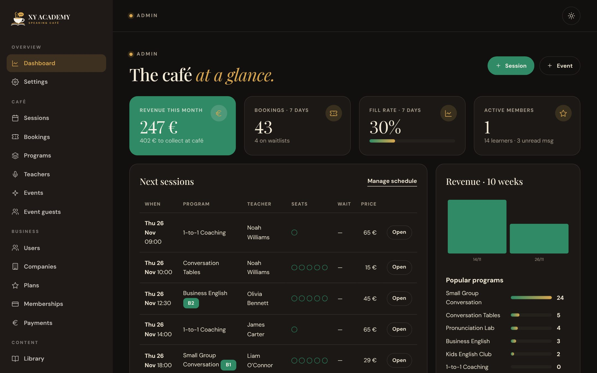
Figure 3 — Dark mode
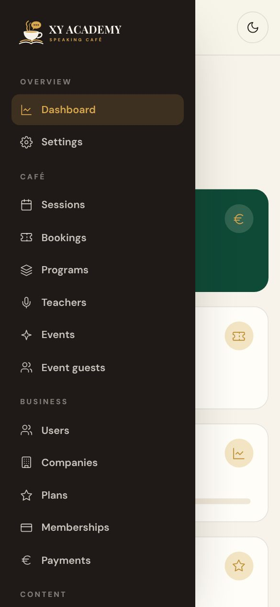
Figure 4 — On a phone, tap ☰ to open the menu
Chapter 03
03The overview page
Your daily starting point. It shows how the café is doing and what is coming next.
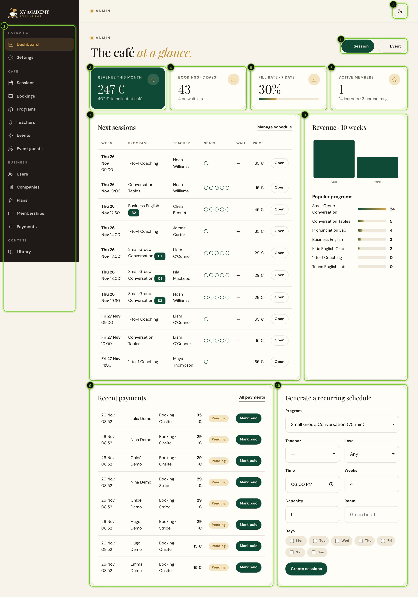
Figure 5 — Admin overview
1Navigation — all admin sections (chapter 02).
2Theme — light / dark mode.
3Revenue this month — total of paid payments since the 1st; below it, the amount still to collect at the café.
4Bookings · 7 days — seats booked for the coming week and number of people on waitlists.
5Fill rate · 7 days — percentage of seats already taken in the coming week.
6Active members — current memberships, learners and unread messages.
7Next sessions — live seat dots (● taken, ○ free), waitlist count, price. Open edits the session and shows its roster.
8Revenue · 10 weeks and popular programs (confirmed + attended bookings).
9Recent payments — Mark paid confirms money received at the counter.
10Generate a recurring schedule — create weeks of sessions in one click (chapter 04).
11Shortcuts — create a session or an event directly.
A low fill rate for the coming week is the right moment to post on social media or send a newsletter about the free seats.
Chapter 04
04Sessions & schedule
A session is one occurrence of a program: a date, a time, a teacher, a room and a number of seats. Learners can only book sessions that exist here.
8Roster — confirmed learners and waitlist in order. ✕ cancels a learner. Add learner books someone manually.
Overbooking protection: the platform locks each session while a seat is being booked, so two people can never take the last seat at the same time. You cannot lower the capacity below the number of learners already seated. If you increase the capacity, people on the waitlist are moved in automatically.
Generating a recurring schedule
On the overview page, the Generate a recurring schedule panel creates many sessions at once — for example every Tuesday and Thursday at 18:00 for the next 8 weeks.
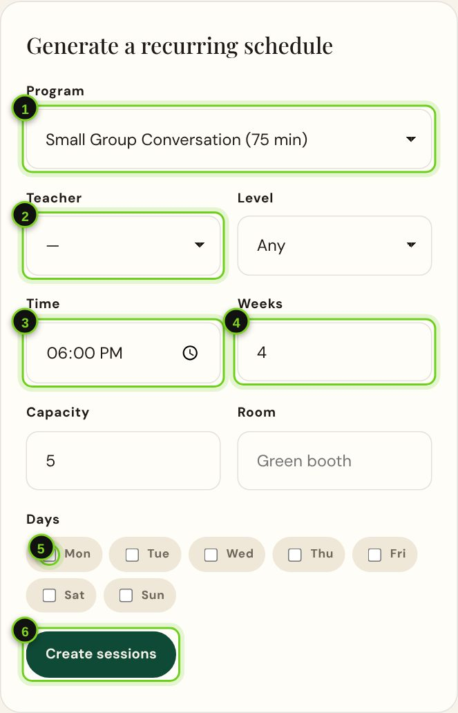
Figure 8 — Recurring schedule generator
1Program — its duration sets the end time.
2Teacher and Level (optional).
3Time — start time of every session.
4Weeks — 1 to 26 weeks from tomorrow. Also set Capacity and Room.
5Days — tick one or more weekdays.
6Create sessions — a message confirms how many were created.
Running the generator twice creates duplicates. If that happens, filter the session list and delete the extra ones (only if nobody booked them).
Cancelling a session
Open the session and set Status to Cancelled, then Save. It disappears from the booking page.
In the roster, cancel each learner with ✕ so membership credits are returned automatically.
Contact the learners (email/phone from Users) and refund online payments from your Stripe dashboard if needed.
Chapter 05
05Bookings & waitlists
Every seat taken (or requested) on a session is a booking. Most bookings are made by learners themselves; you can also create and manage them here.
Seat held while the learner pays online (20 minutes by default). If not paid in time, the seat is released automatically and offered to the waitlist.
Confirmed
Seat secured: paid online, paid with a membership credit, or “pay at the café”.
Waitlist
Session full. The learner is in line and will be promoted automatically when a seat opens.
Attended / No show
Set after the session by the teacher or by you. Used for attendance statistics.
Cancelled
Seat released. Membership credits are returned automatically.
How the waitlist works
When a confirmed learner cancels, the first person on the waitlist gets the seat and an email.
If they have a membership credit, they are confirmed immediately. Otherwise their seat is held for up to 12 hours so they can pay from their dashboard.
Learners can cancel for free until the limit set in Settings (12 hours before by default). After that, only you can cancel.
Booking a seat for someone (phone or walk-in)
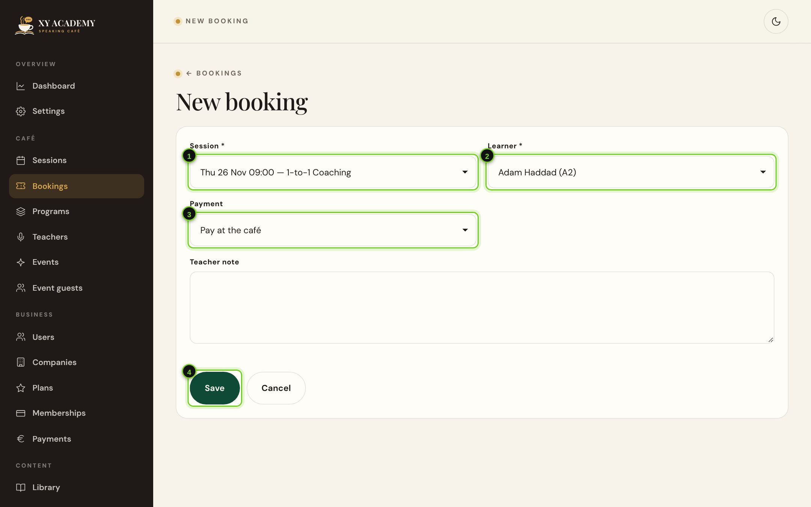
Figure 10 — New booking
1Session — upcoming sessions only.
2Learner — the person who will attend (create the user first if new).
3Payment — pay at the café, membership credit, or online link in their dashboard.
4Save — if the session is full, the learner is added to the waitlist instead.
Chapter 06
06Programs & prices
Programs are the products shown on the website (Programs page, home page carousel, booking wizard). Changing a price here updates the whole site instantly.
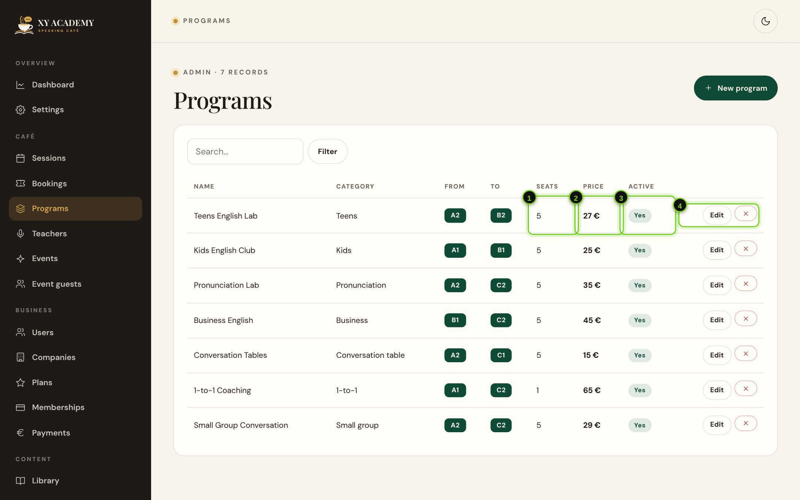
Figure 11 — Programs list
1Seats — default capacity for new sessions.
2Price — price per session.
3Active — only active programs are visible and bookable.
4Edit / delete — prefer deactivating to deleting.
The Goals field (e.g. conversation, career) helps the booking wizard recommend this program to learners who chose that goal.
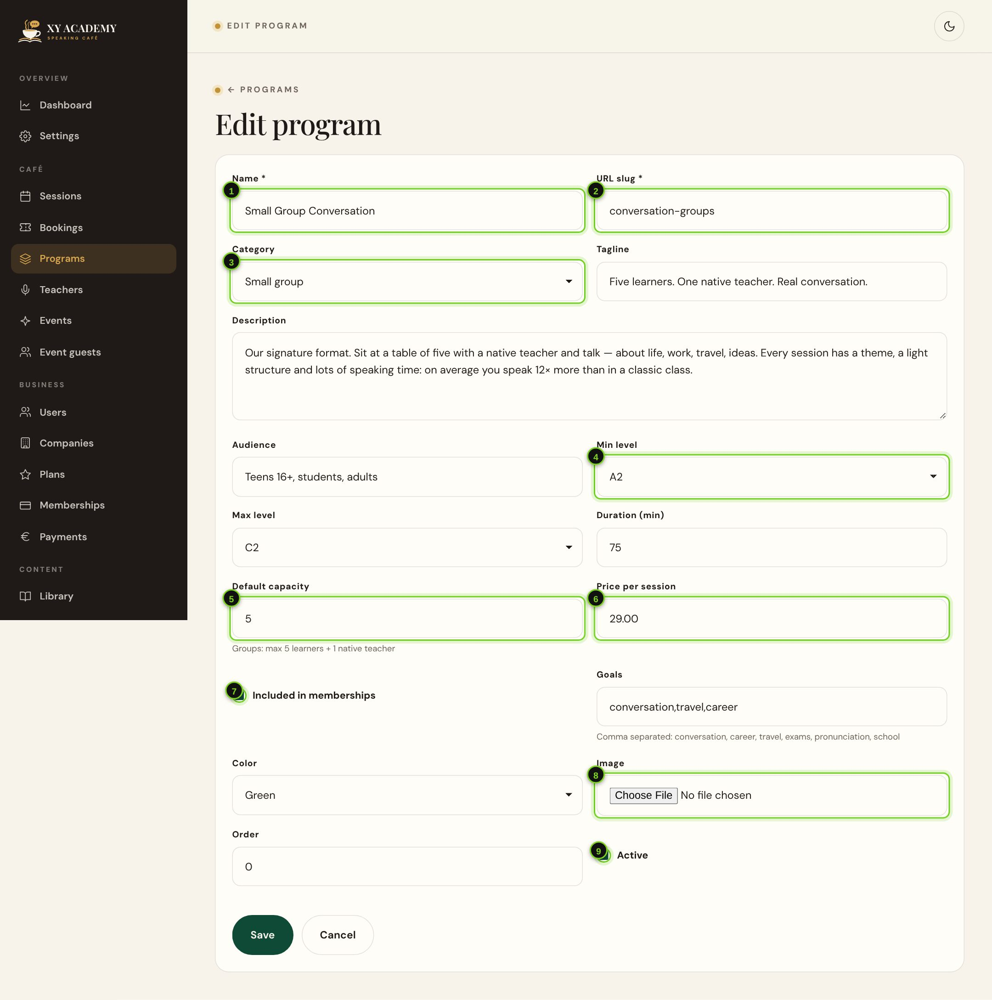
Figure 12 — Edit a program
1Name — shown everywhere on the site.
2URL slug — web address, e.g. /programs/business-english. Avoid changing it once published.
7Included in memberships — can be paid with membership credits.
8Image — optional photo (JPG, PNG or WEBP).
9Active — untick to hide the program without losing its history.
Chapter 07
07Teachers
Teacher profiles appear on the Teachers page, the home page and the booking wizard. A teacher who needs to log in (to mark attendance and write progress reports) also needs a user account.
Adding a new teacher — 3 steps
Users → New user: first name, last name, email, Role = Teacher, a password. Save.
Teachers → New teacher: fill the profile and choose that user in Login account. Save.
Assign the teacher to sessions (chapter 04). Send them the login address and their password.
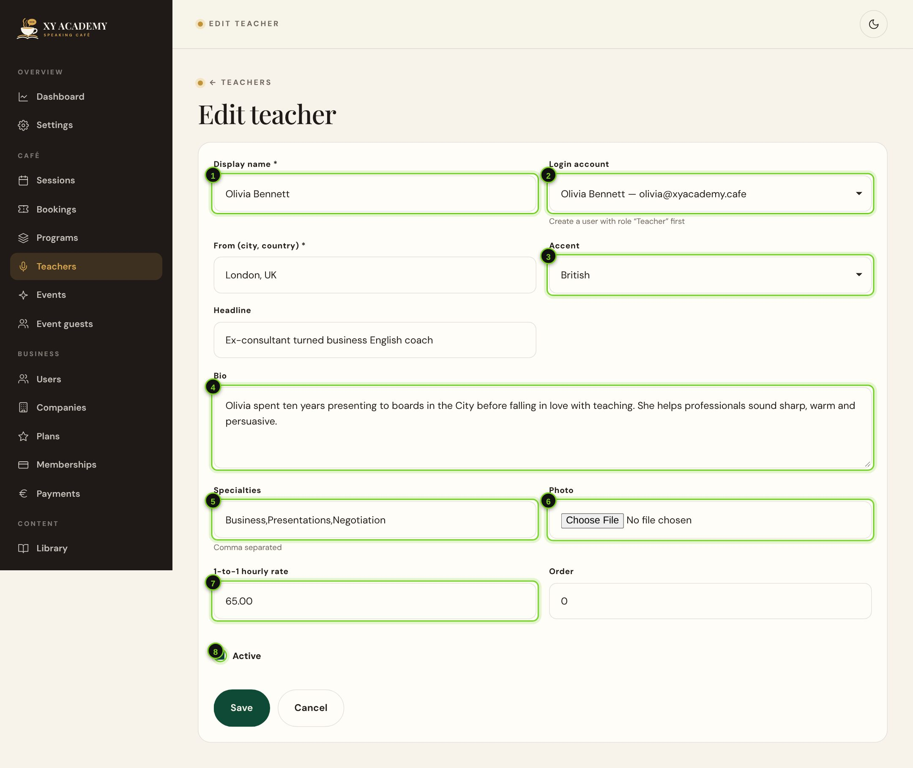
Figure 13 — Teacher profile
1Display name — public name.
2Login account — links the profile to a user with role Teacher.
3Accent — British, American, Irish…
4Bio — short presentation shown on the Teachers page.
5Specialties — comma separated (Business, Kids…).
6Photo — square portrait recommended. Without photo, elegant initials are shown.
71-to-1 hourly rate — internal reference.
8Active — untick when a teacher leaves.
Chapter 08
08Events & guests
Quiz nights, debates, movie nights, networking, book club and karaoke appear on the Events page and on the home page. Members whose plan includes events join for free.
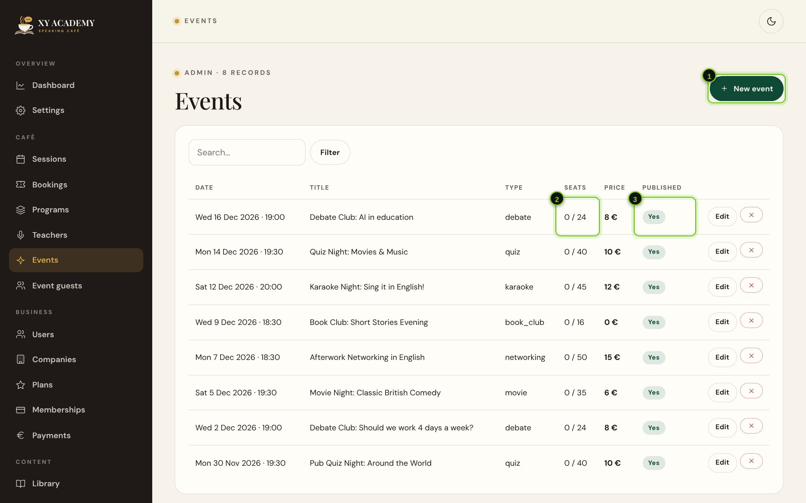
Figure 14 — Events list
1New event.
2Seats — registered guests / capacity.
3Price — 0 = free event.
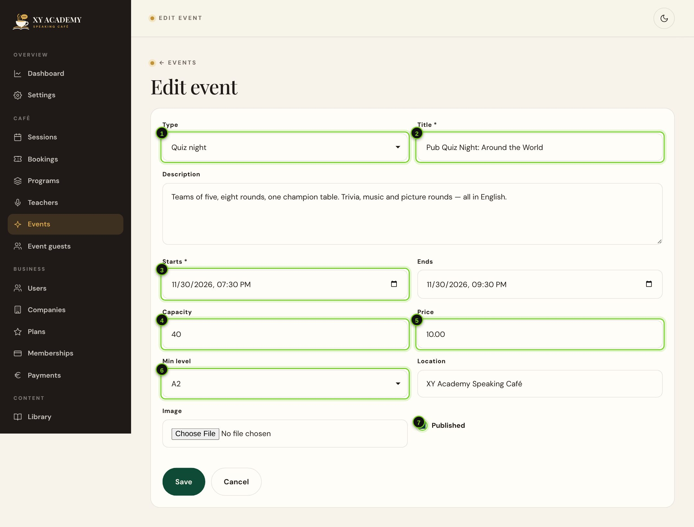
Figure 15 — Edit an event
1Type — sets the icon and label.
2Title and description.
3Starts / Ends.
4Capacity — when full, new guests join a waitlist.
5Price.
6Min level — recommended level.
7Published — untick to prepare an event before announcing it.
3Edit — extend the end date, add credits (gesture, compensation) or activate a membership paid in cash.
A membership becomes active automatically when the payment succeeds. If a customer pays in cash, open Payments and click Mark paid on the matching membership payment — dates and credits are set for you.
Chapter 10
10Payments
Every booking, membership and paid event creates a payment record, even when it is paid with a credit or free.
4Mark paid — confirms cash / card received at the counter. Bookings, memberships and events linked to it are confirmed automatically.
Until the Stripe keys are added (by Webina, in the server configuration), online payments run in demo mode: no real money is taken. Ask Webina to switch to live mode before launch.
Method
Meaning
stripe
Online card payment. Confirmed automatically by Stripe. Refunds are made from your Stripe dashboard (stripe.com), then set the status to refunded here.
onsite
“Pay at the café”. The seat is confirmed; click Mark paid when the learner pays.
credit
Paid with a membership credit (amount 0).
free
Free session or event.
Chapter 11
11Users, families & companies
All accounts live in Users. Each user has one role that decides what they see.
Role
What they can do
Student
Book seats, pay, manage their membership, follow their progress, download books for their level.
Parent
Add children, book for them, follow each child’s progress and teacher notes.
Teacher
See their schedule and rosters, mark attendance, write notes and progress reports.
Corporate
Add employees, book seats for them, follow attendance and progress for the company.
Admin
Everything described in this guide.
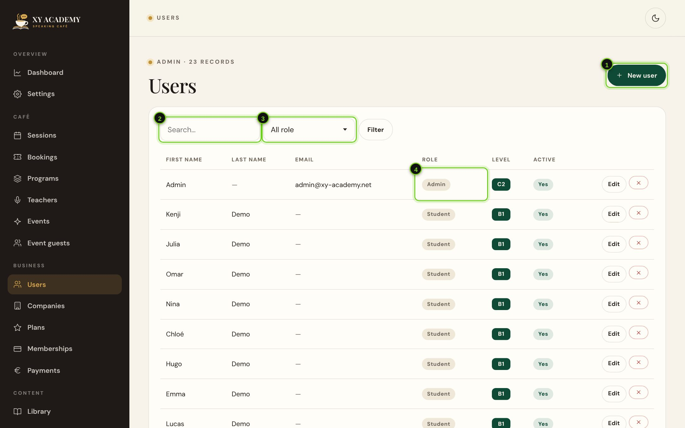
Figure 20 — Users list
1New user.
2Search by name or email.
3Role filter.
4Role of each account.
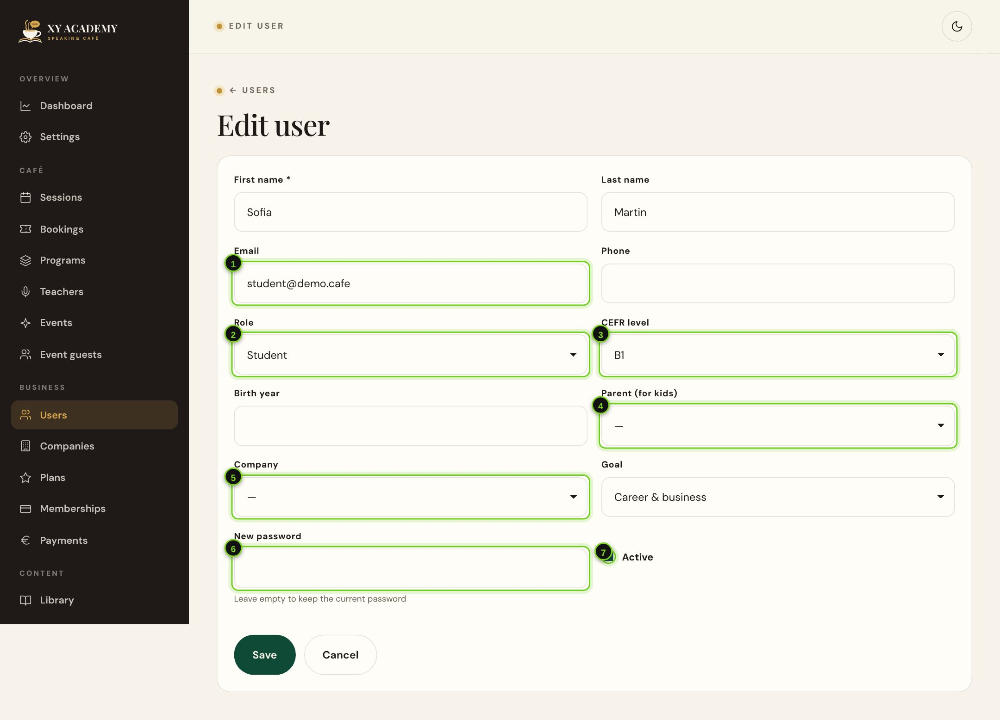
Figure 21 — Edit a user
1Email — login identifier (must be unique). Children may have no email.
2Role.
3CEFR level — also unlocks library shelves. Teachers update it with progress reports.
4Parent — links a child to a parent account.
5Company — links an employee to a corporate client.
6New password — set a new password for someone who is locked out.
7Active — untick to block access without deleting history.
Companies
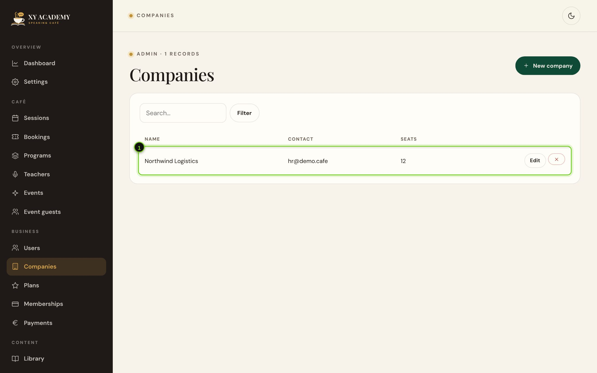
Figure 22 — Companies
A company is created automatically when a business signs up as “A company”. You can also create one here, then create a user with role Corporate linked to it. The HR contact can then add employees from their own dashboard; employees receive a temporary password by email.
Chapter 12
12The library
Downloadable books are organised by CEFR level. A learner can download books for their level and below; higher levels are visible but locked. Parents and companies get the levels of their children / employees. Files are stored privately and cannot be shared by direct link.
Figure 25 — What a B1 learner sees: shelves up to B1 open, higher levels locked
Only upload books you have the right to distribute (your own material or licensed content).
Chapter 13
13Contact messages
Messages sent from the Contact page are saved here and also emailed to the contact address from Settings. The sidebar shows the number of unread messages.
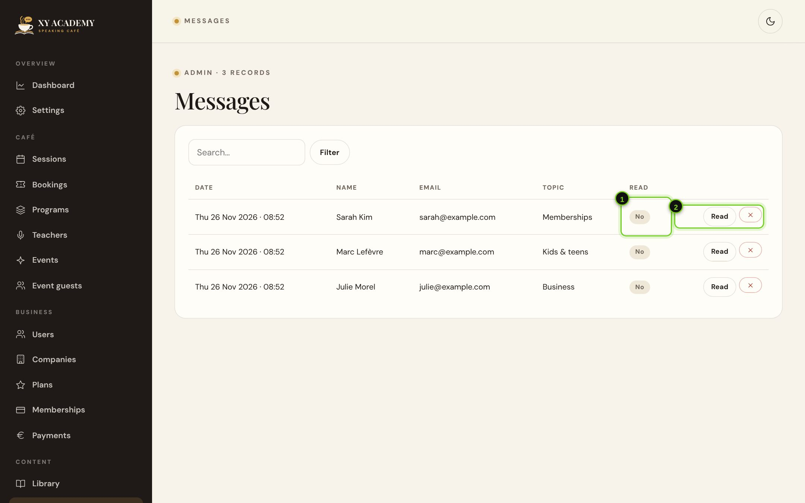
Figure 26 — Messages
1Read — “No” for new messages.
2Read opens the message and marks it as read. Reply from your own mailbox to the sender’s email.
Chapter 14
14Settings
General information and business rules used across the website.
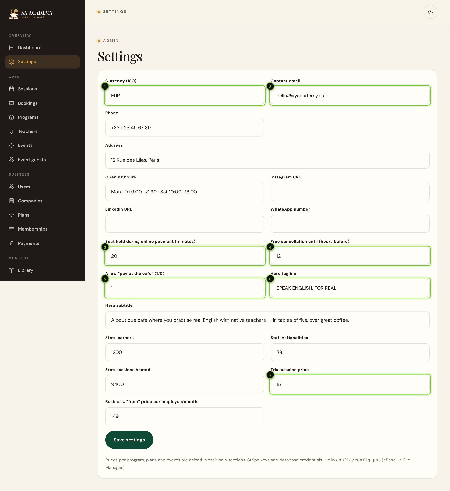
Figure 27 — Settings
Setting
Effect
1 · Currency
ISO code used for all prices (EUR, USD, GBP, TRY…).
2 · Contact email, phone, address, hours
Shown in the footer and on the Contact page. Contact form messages are sent to this email.
Instagram / LinkedIn / WhatsApp
Social links in the footer (leave empty to hide).
3 · Seat hold during online payment
Minutes a seat is reserved while a learner pays by card (default 20).
4 · Free cancellation until
Hours before the session when learners can still cancel themselves (default 12).
5 · Allow “pay at the café”
1 = option visible in the booking wizard, 0 = online or credit only.
6 · Hero tagline / subtitle
Main text on the home page video.
Stats (learners, nationalities, sessions)
Animated numbers on the home page.
7 · Trial session price
Price mentioned in the call-to-action banners.
Business “from” price
Price per employee shown on the Business page.
Click Save settings at the bottom. Changes are live immediately.
Chapter 15
15What your customers & teachers see
Knowing the other side helps you answer questions by phone or at the counter.
The booking wizard (learners)
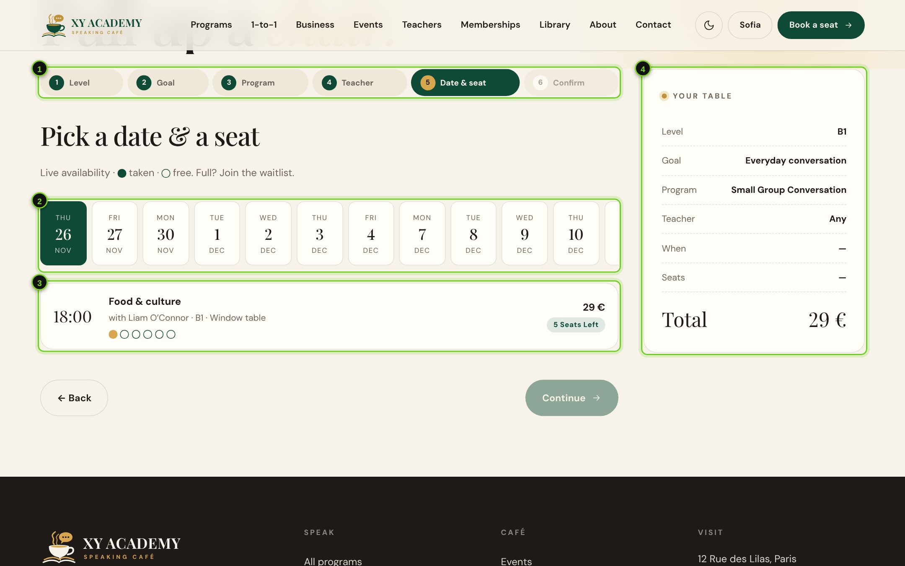
Figure 28 — Booking wizard at xy-academy.net/book
16 steps: Level → Goal → Program → Teacher → Date & seat → Confirm.
2Days with available sessions.
3Session with live seats (● teacher in amber, ● taken, ○ free) or “Waitlist”.
4Summary — level, program, time and total price.
The teacher studio
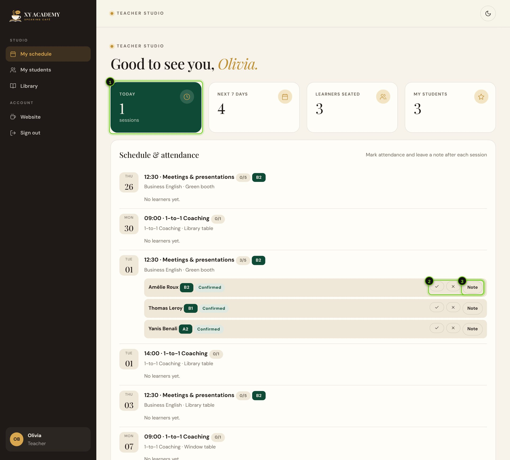
Figure 29 — Teacher dashboard
1Today / week — sessions and seated learners.
2Attendance — ✓ present, ✕ absent for each learner.
3Note — a comment the learner (and parent) sees in their dashboard.
Further down, My students & progress reports lets teachers score speaking, listening, pronunciation, vocabulary and confidence (0–100) and update the CEFR level. Learners and parents see these as charts in their dashboards.
The public website
Figure 30 — Home page (light and dark mode available to visitors)
Chapter 16
16Daily routine checklist
When
Task
Where
Every morning
Check the fill rate and today’s sessions; read new messages.
Overview · Messages
Before each session
Open the session roster; prepare the table for the confirmed learners.
Sessions → Open
At the counter
Click Mark paid for learners who pay on site.
Payments (filter: pending)
After each session
Make sure attendance is marked (teacher or you).
Bookings · Teacher studio
Every week
Generate the schedule for upcoming weeks; publish the next events.
Overview → Generator · Events
Every month
Review revenue, popular programs, expiring memberships; adjust prices if needed.
Overview · Memberships · Programs
Every month
Check that a website + database backup exists (cPanel → JetBackup / Backup).
cPanel (or ask Webina)
Chapter 17
17FAQ & troubleshooting
A learner says the session is full but wants to come.
Book them from Bookings → New booking: they will be placed on the waitlist. To give them a seat anyway, first increase the session capacity — the waitlist moves up automatically.
A booking stays “pending”.
The learner started an online payment but did not finish. The seat is released automatically after the hold time. If they paid you in cash, use Mark paid on their payment.
A learner forgot their password.
They click Forgot password? on the sign-in page. If the email doesn’t arrive (check spam), set a new password in Users → edit → New password.
I changed a price but old bookings show the old price.
Normal: existing payments keep the price at the time of booking. New bookings use the new price.
A teacher cannot see their schedule.
Check that their user has Role = Teacher, that the teacher profile has this user as Login account, and that sessions are assigned to them.
A learner cannot download a book.
The book level is higher than the learner’s CEFR level. Update their level (or ask the teacher to submit a progress report).
Emails are not received.
Check spam folders and that the sender mailbox exists in cPanel → Email Accounts. Contact Webina if the problem persists.
Can I delete something?
Prefer deactivating (Active / Published unticked). Items linked to bookings or payments cannot be deleted to protect your history.
Chapter 18
18Glossary & support
Term
Definition
CEFR
Common European Framework of Reference: levels A1, A2 (beginner), B1, B2 (intermediate), C1, C2 (advanced).
Program
A type of class sold on the site (e.g. Business English).
Session
One dated occurrence of a program, with a teacher and a capacity.
Seat / capacity
Number of learners allowed in a session (teacher not included).
Waitlist
Ordered queue of learners waiting for a seat in a full session.
Seat hold
Time a seat is reserved while a learner pays online.
Credit
One session included in a membership plan.
Roster
List of learners booked on a session.
Attendance rate
Attended ÷ (attended + no show).
Support
Webina — Digital Creation Agency
For technical help, new features (AI pronunciation, mobile app, online lessons), Stripe activation or hosting questions, contact your Webina project manager.
Please include: the page address, a screenshot, and what you were trying to do.
Technical information for Webina: PHP 8.3 + MySQL on cPanel; configuration file config/config.php; error logs in storage/logs/; REST API at /api/v1.